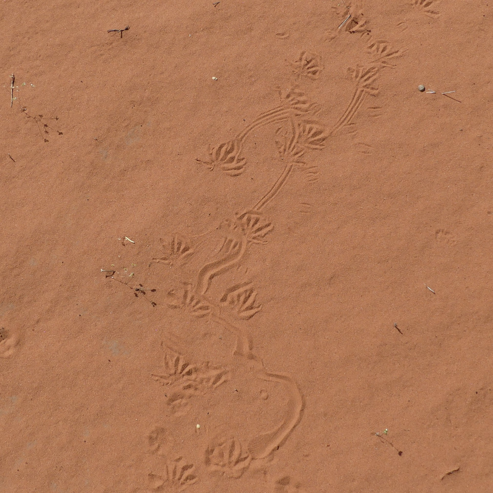

All about monsters
Gila monsters (Heloderma suspectum) are iconic lizards of the American Southwest, however encountering them is especially rare. Due to their patchy distribution, limited surface activity, and short active season, field observations are challenging even in high-quality habitat. Since 2020, I have worked with the Bureau of Land Management’s St. George Field Office to monitor and assess a Gila monster population within the Red Cliffs National Conservation Area. In 2024, I joined the Gienger Lab at Austin Peay State University to explore how environmental variation and landscape features shape Gila monster occupancy and detection probability.

Occupancy Modeling
 With increasing development pressure in the American Southwest, land management officials in St. George, UT require up-to-date assessments of Gila monster distribution and habitat use to guide long-term management. During the 2025 active season (April–July), my team and I completed 500 time-constrained transect surveys across six sites in St. George. Using R (spOccupancy, unmarked, and sf packages), I'm constructing occupancy models that estimate site-level use and detection probability across the landscape. Link to thesis presentation (.pdf)
Home-range Estimation & Habitat Use

As part of a 10-year study in the Red Cliffs National Conservation Area, we are examining key aspects of Gila monster ecology including home-range size, diet, habitat selection, and intraspecific interactions. Using traditional field-tracking techniques (e.g., body prints, scat, and tracks in sand dunes), individuals have been identified by their unique dorsal patterns and monitored with DSLR cameras and wildlife camera traps. For this project, I'm conducting seasonal home-range analyses using both Minimum Convex Polygons (MCP) and kernel density estimators (KDE), and applying a hierarchical habitat-selection framework to evaluate landscape-level selection, individual seasonal home-ranges, and fine-scale resource use. Future analyses will expand on this framework to investigate diet composition, shelter use patterns, and how these behaviors vary across environmental gradients.
Publications
| Heloderma suspectum (Gila Monster). First Record of Mating in the Wild | (2025). Herpetological Review. 55. 440–442. |